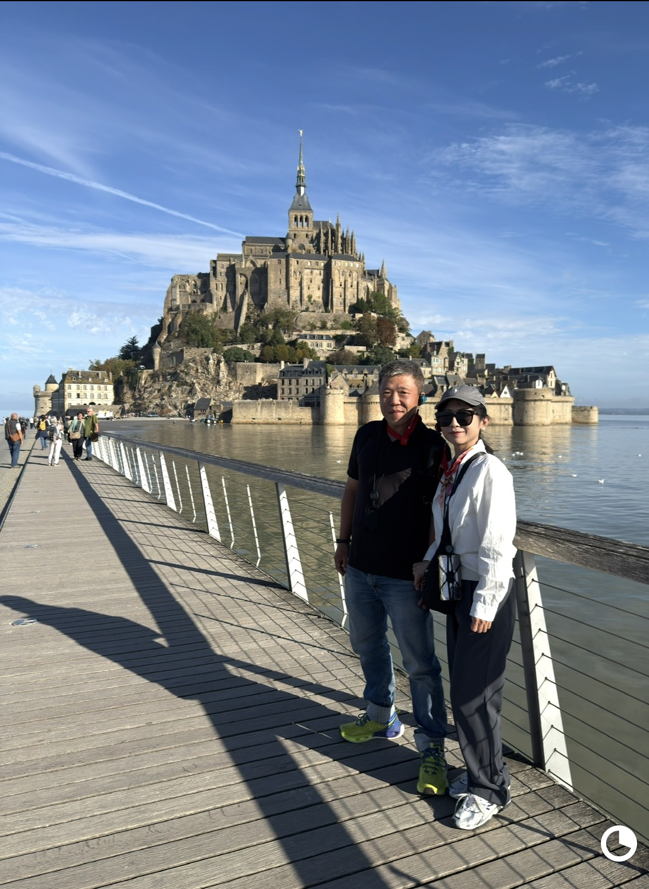
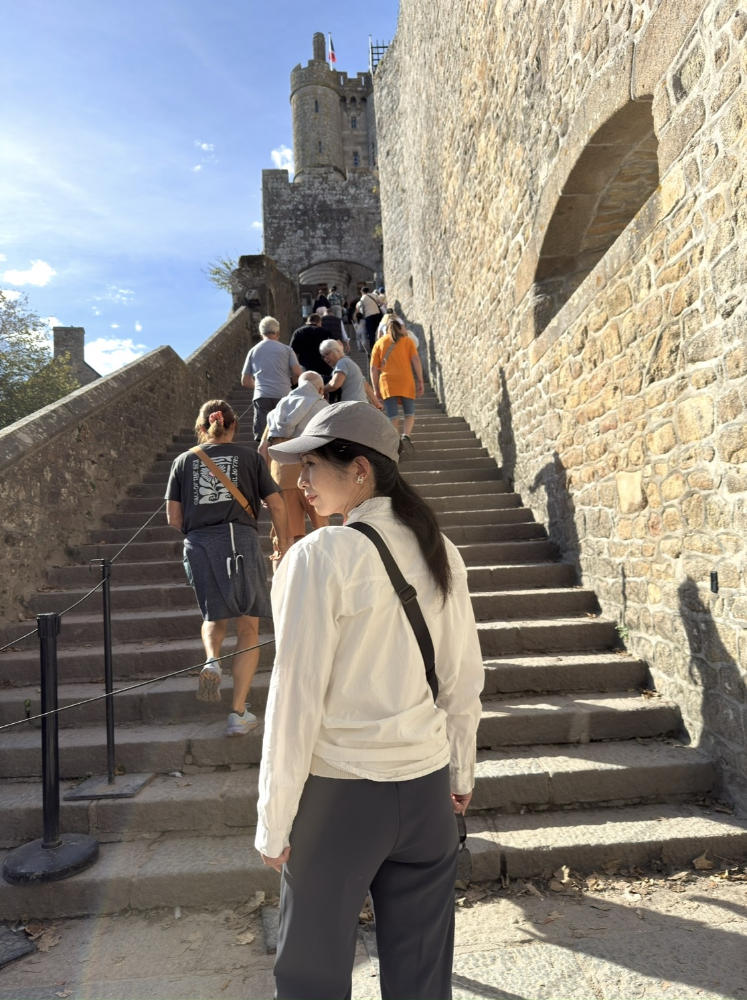
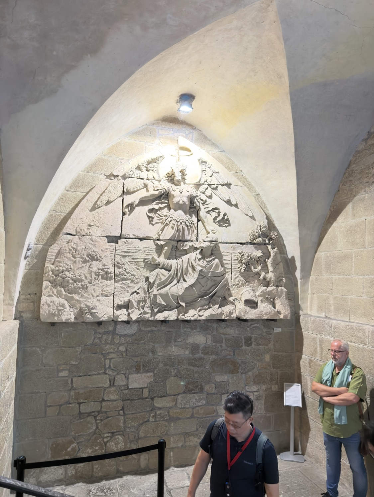
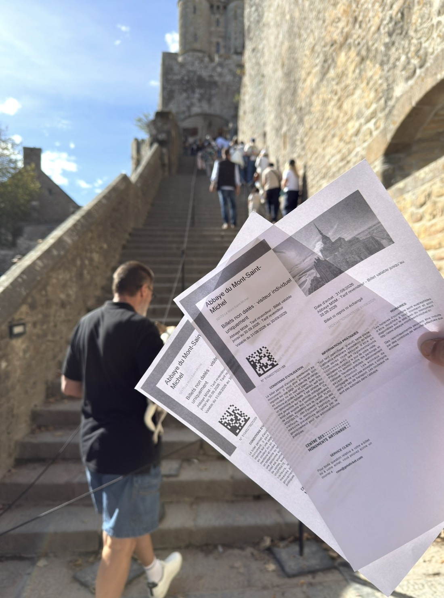
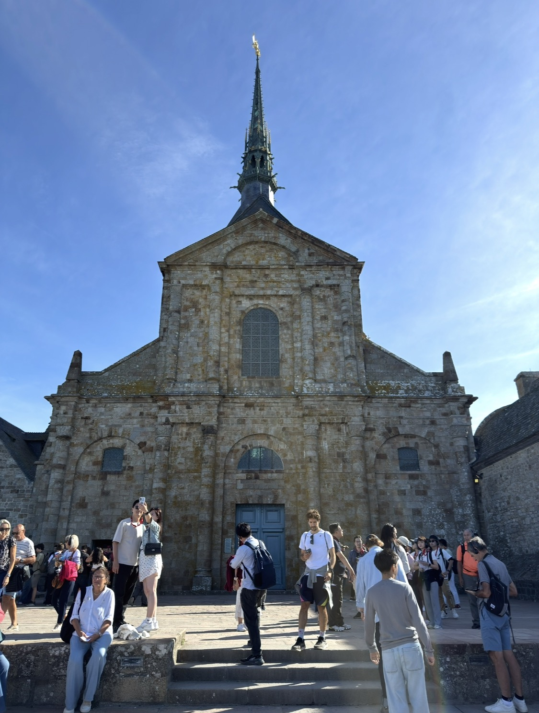
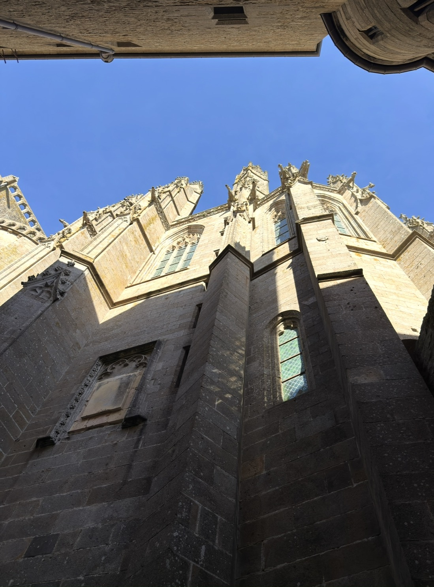
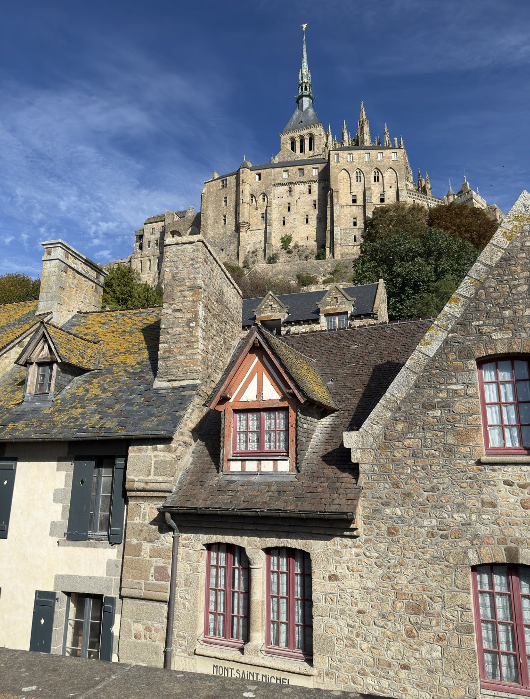
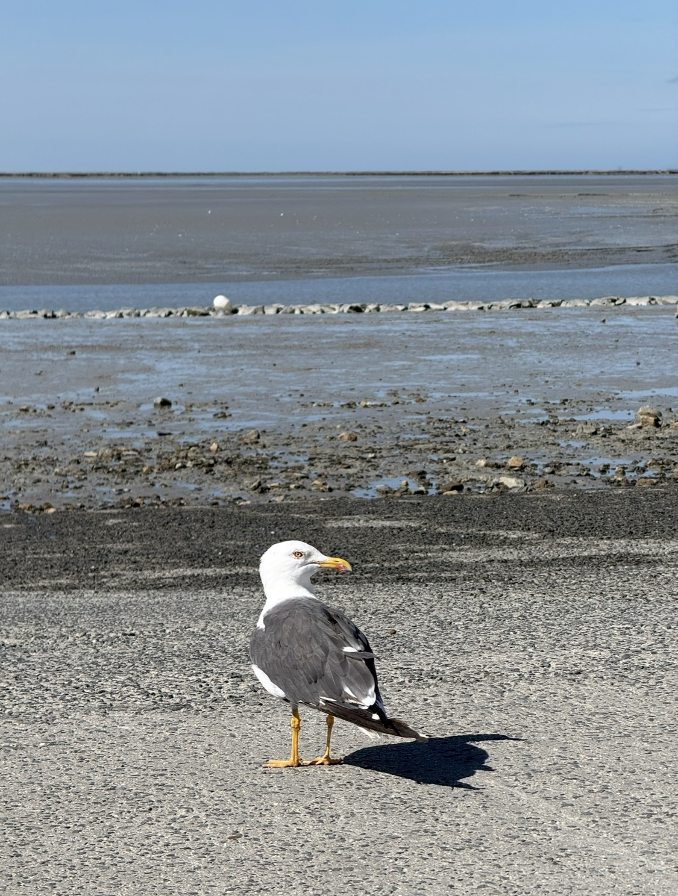

從遠處第一次看到聖米歇爾山時，它不像一棟建築。
比較像一整座世界，從水面上長了出來。
那天天氣好得有點不像話。天空很藍，光線乾淨，海面把整座山的輪廓映回來；而我在出發前就已經透過 ChatGPT 的行前導覽知道，這幾天正落在九月一輪大潮附近。真正站在現場時，那件事才從「行前資料」變成眼前的地理感：聖米歇爾山之所以迷人，不只是因為修道院蓋得高，而是因為潮水真的會改變它和陸地之間的關係。
運氣很好。
旅行有時候就是這樣。同一個地方，陰天、退潮、下雨，也都還是它；但偏偏這一天，藍天、海水、倒影和那座山都在。
有些景點是站到面前才覺得「原來如此」；聖米歇爾山卻是站到面前之後，反而覺得它比照片更不真實。
先走過水，再往石頭裡面走
從棧道往山的方向走，最先感覺到的是它的層次。

遠看時是一座尖塔；走近之後，底下先變成城牆，再變成房子、巷道、店鋪；繼續往上，石階把人一層一層往修道院送。這種「下方是村落，上方是宗教建築，外面又包著防禦工事」的結構，和一般平地上的教堂完全不同。
它不是把一棟教堂放在山頂，而是把整座岩山本身變成了建築的一部分。
那些階梯，居然沒有想像中可怕
聖米歇爾山一路往上的階梯不少，而且很多地方狹窄、坡度也很直接。
但這次我反而很明顯感覺到：平常的訓練真的有用。
跑步、騎車、爬坡累積下來的體能，讓我可以一路往上，沒有被那些石階拆成一段一段地休息。當然不是說它變成平路，而是呼吸和腿都還在自己的控制裡。對旅遊來說，這種差別很實際——別人在想「還有幾階」，我可以把注意力留給牆、光線、屋頂和那些突然從巷子裡冒出來的角度。
在象鼻海岸，我第一次感覺體能讓我「多看了一點」；到了聖米歇爾山，它更像讓我「不中斷地走進去」。

原來這裡的天使，不是柔軟的那一種
我原本對「天使」的印象，其實很普通：翅膀、光、神聖感，大概就這樣。
直到行前查聖米歇爾山，我才第一次碰到所謂的天使學，也才知道米迦勒在基督宗教傳統裡不是一個裝飾性的角色。
修道院官方對他的描述非常直接：米迦勒是「天軍的領袖」。在《啟示錄》的意象裡，他率領天使與龍戰鬥；到了中世紀，他又被理解為引導亡者、在最後審判時衡量靈魂的人。所以他的典型形象不是拿著花，而是拿著劍，有時另一手還會拿著天秤。
突然之間，山頂那尊金色天使的意義就完全不一樣了。
原來這整座山，不只是「以某位天使命名」；它在中世紀人的世界裡，本來就是一個和守護、戰鬥、審判、救贖連在一起的地方。

一場夢，最後蓋成了一座山
依照聖米歇爾山流傳至今的傳說，故事從西元 708 年開始。
阿夫朗什的主教 Aubert 據說三次在夢中見到米迦勒，並被要求在當時稱作 Mont-Tombe 的岩山上建立聖所。966 年，諾曼第公爵又讓本篤會修士進駐；之後幾百年間，修道院不斷往上、往外生長。
到了 11 世紀，羅馬式修道院教堂開始建立；13 世紀又出現那組後來被直接稱作 La Merveille——「奇蹟」——的哥德式建築群。因為山頂能用的平面根本不夠，建築師只好把空間一層一層疊起來，讓餐廳、迴廊、接待空間與宗教空間沿著岩山向上發展。
這也是為什麼人在裡面走時，常常搞不清楚自己到底在山的哪一面、哪一層。你不是在參觀一棟建築，而是在一個垂直的迷宮裡移動。


很像動畫裡「劍與杖」的世界——而且它真的打過仗
如果只看照片，聖米歇爾山很容易被拍得浪漫。
可真正走進石牆、塔樓、長階梯與那些仰角之後，我腦子裡浮出的反而是動畫或 RPG 裡的「劍與杖」世界：修道院、城牆、尖塔、守衛、狹窄石階，彷彿下一個轉角就會遇到穿鎧甲的人。
更妙的是，這種感覺並不完全是幻想。
百年戰爭期間，聖米歇爾山確實因為它的地形與防禦工事成為重要據點；官方資料記載，這裡的軍事設施曾讓它撐過長時間圍攻。宗教聖地與軍事堡壘在同一個地方重疊，難怪整座山會同時有修道院的垂直感，也有城堡的戒備感。
所以我後來愈想愈覺得，那種「動漫世界感」不是我想太多，而是現代奇幻世界本來就大量借用了這套中世紀的視覺語言。

站在下面仰望，比在遠處看更有壓迫感
從遠處看聖米歇爾山，最漂亮的是輪廓。
走進去之後，最強烈的反而是尺度。
下面是低矮的石屋與斜屋頂，上面卻直接壓著修道院巨大的牆體。抬頭時，牆、窗、飛扶壁與尖塔幾乎把視野切滿，天空只剩在建築縫隙裡出現。
那種感覺有點奇怪：明明是宗教建築，卻不只讓人覺得神聖，還會讓人感受到重量、秩序和某種權力。
而當你再想到中世紀的人是徒步、踩著泥灘與潮水來朝聖，這條「往上」的路，就不再只是遊客動線。

然後，海鷗又出現了
在象鼻海岸，我已經開始覺得海鷗愈看愈可愛。
到了聖米歇爾山，牠們又出現。
這次背景不是深藍的海，而是大片潮間帶。退潮之後，水線退得非常遠，泥灘與淺水攤開成一整片灰藍色的平面；一隻海鷗就站在前面，神情還是一副「這裡本來就是我的地方」的樣子。

我那時候還沒有刻意把這些小東西串起來，但現在整理照片才發現，旅行裡某些喜歡就是這樣慢慢長出來的。
先是在象鼻海岸多看了幾眼，又在聖米歇爾碰見牠們。這時候我當然還沒有買任何海鷗娃娃，只是那份「愈看愈可愛」的感覺，又被悄悄往前推了一步。
我那時還不知道，下一站聖馬洛，牠們會改成在城牆與屋頂上空叫著、盤旋；也是到了那裡，我才真的把一隻海鷗娃娃買回來。回頭看才發現，購買它的理由不是突然出現的：象鼻海岸先埋了一顆種子，聖米歇爾山又替它添了一點水。
離開之後，我記得的是一種「垂直」
如果說象鼻海岸的記憶是向外展開——海岸線、懸崖、天空和還沒走完的路——那聖米歇爾山剛好相反。
它一直叫你往上。
從水面看山，從城門進村，從屋頂走向修道院，最後抬頭看向尖塔最上方的米迦勒。整趟路的方向幾乎都是垂直的。
所以回來以後，我對它最深的記憶甚至不是「很漂亮」。
而是：原來一千多年以前，人可以把信仰、恐懼、戰爭、建築與潮水，全部堆在同一塊石頭上。
出發前，我只知道聖米歇爾山是一個很有名的法國景點。
離開時，我才知道自己剛走過的是一座以天使為名、被潮水包圍、在戰爭裡守過城、也讓無數朝聖者一路往上走的山。
而最讓我意外的，是那位站在最高處的天使——原來他手裡不是花，而是一把劍。